Note
Hello, welcome to the SunFounder Raspberry Pi & Arduino & ESP32 Enthusiasts Community on Facebook! Dive deeper into Raspberry Pi, Arduino, and ESP32 with fellow enthusiasts.
Why Join?
Expert Support: Solve post-sale issues and technical challenges with help from our community and team.
Learn & Share: Exchange tips and tutorials to enhance your skills.
Exclusive Previews: Get early access to new product announcements and sneak peeks.
Special Discounts: Enjoy exclusive discounts on our newest products.
Festive Promotions and Giveaways: Take part in giveaways and holiday promotions.
👉 Ready to explore and create with us? Click [here] and join today!
7. Auto Watering System with Blynk
A soil moisture probe goes into the pot and a small pump sits in a glass of water. The board reports how wet the soil is, and - once you allow it - switches the pump on by itself before the plant gets thirsty.
From the phone you can watch the moisture, drag a slider to choose how dry the soil may get, and decide whether the kit is allowed to water on its own.
1. Build the Circuit
Note
The module draws a high current at start-up, so make sure the 9 V battery or an external power supply is plugged into the DC jack of the R4 Minima.

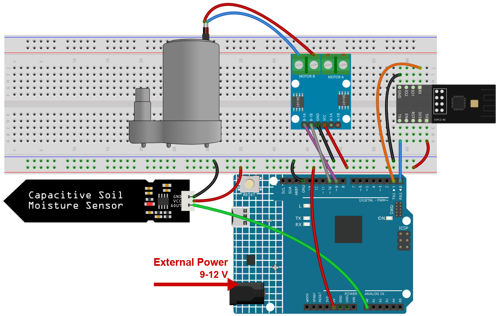
2. Configure Blynk
Note
The template and the device were created once in Get Started with Blynk. Every project adds its datastreams to that same template, so each project occupies its own range of virtual pins. This project uses V8 to V10.
What this project sends to the cloud
Three values, and they do different jobs:
moisture_percentage- the board writes this, so you can see how wet the soil is.water_threshold- you write this from the slider: the level below which the pump runs.auto_mode- a switch that decides whether the board is allowed to start the pump by itself.
Add the datastreams
Open Developer Zone -> My Templates, click Ultimate Sensor Kit.
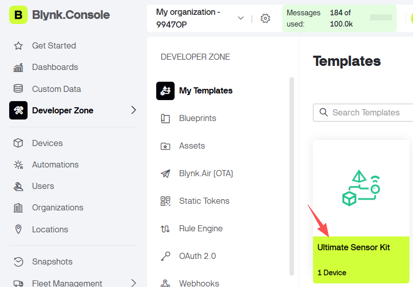
Click Edit to open the template.
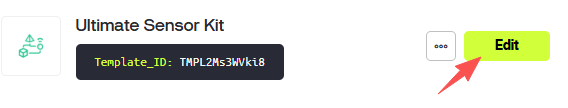
Click Datastreams, then Create New.
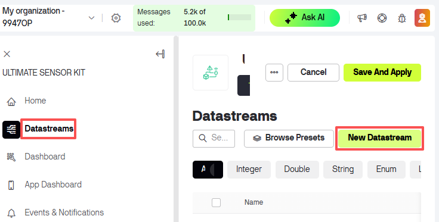
Create the first datastream - a Virtual Pin datastream. Nothing is wired to
V8: a virtual pin only exists in the cloud, it is a mailbox the board and the app share.DATASTREAM NAME:
moisture_percentageDISPLAY NAME:
Moisture PercentageVIRTUAL PIN:
V8DATA TYPE: Double
MIN
0, MAX100
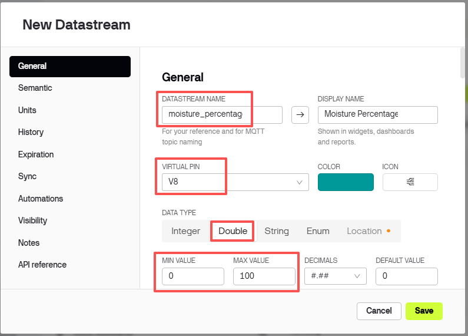
Set the UNITS field to
Percentage.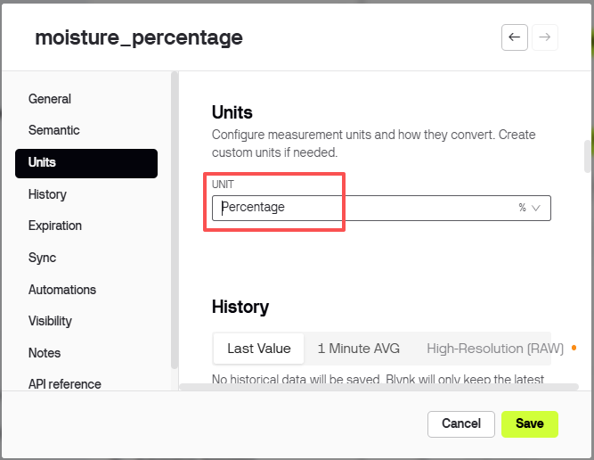
Create the other two Virtual Pin datastreams the same way - click Create New twice more:
Pin
Datastream name
Display name
Type
Min / Max
Units
V9
water_thresholdWater ThresholdDouble
0 / 100
Percent
V10
auto_modeAuto ModeInteger
0 / 1
None
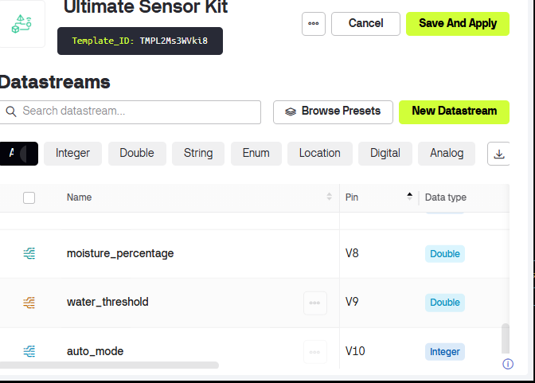


Add the web dashboard
Click Dashboard, then Add Widget.
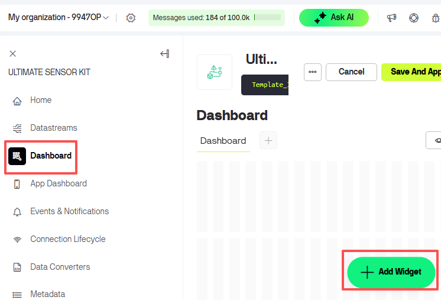
Drag a Gauge widget onto the dashboard.
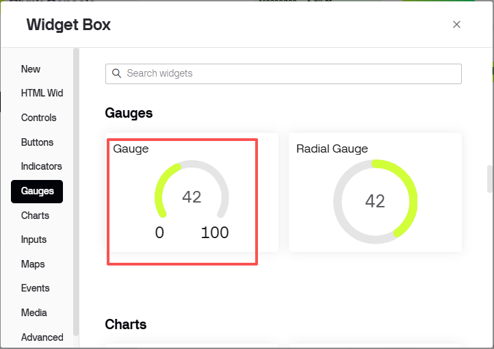
Click the three dots in the corner of the Gauge and choose Settings.
Set Datastream to
Moisture Percentage (V8).
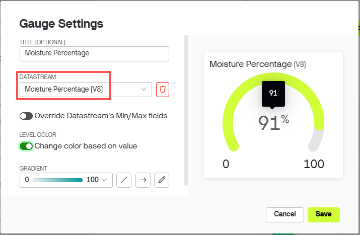
Drag a Slider and a Switch onto the dashboard the same way, then bind them:
Widget
Datastream
What it is for
Slider
Water Threshold (V9)set the level at which watering starts
Switch
Auto Mode (V10)allow the board to drive the pump on its own
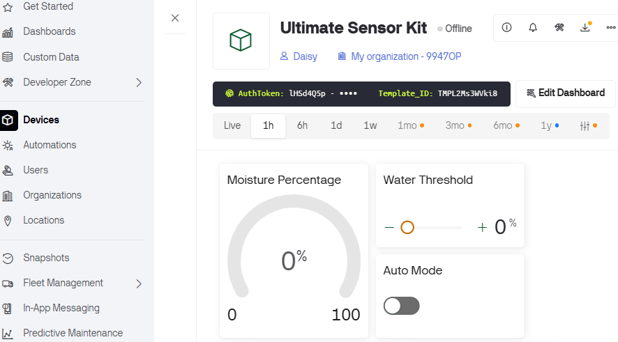
Note
With auto_mode off the pump never runs, whatever the slider says. That is the safe default: you can watch the readings for a while before letting the kit water the plant on its own.
Click Save.
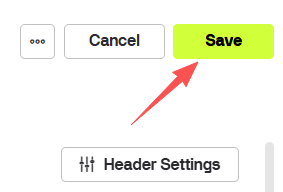


3. Run the Code
Open the
07-Auto_watering_system.inofile under the path ofultimate-sensor-kit\code\iot_project_espc201\wifi\07-Auto_watering_system, or copy this code into Arduino IDE.The three Blynk lines were copied in the Get Started chapter - leave them as they are.
#define BLYNK_TEMPLATE_ID "TMPLxxxxxx" #define BLYNK_TEMPLATE_NAME "Ultimate Sensor Kit" #define BLYNK_AUTH_TOKEN "YourAuthToken"
Type the name and the password of your own Wi-Fi network.
char ssid[] = "your_ssid"; char pass[] = "your_password";
Select Arduino UNO R4 Minima and the right port, then click Upload.
Open the Serial Monitor at 115200. Every 10 seconds the board reports the soil:
----------------------------- Update soil moisture data ... sensorValue:453 moisturePercentage:32.16
The number after
sensorValueis the raw reading of the probe. Ignore the percentage for now - it is not calibrated yet.Calibrate the probe, because every probe and every soil is different:
Hold the probe in the air (dry) and write down the
sensorValue, for example535.Put the probe in a glass of water and write down the second
sensorValue, for example280.Put both numbers into the sketch:
const float moistureInAir = 535; // reading in dry air const float moistureInWater = 280; // reading in water
Upload again. Now the percentage really means something: 0 % is as dry as the air, 100 % is as wet as the water.
Note
The probe reads higher when dry and lower when wet - that is why the two numbers appear in this order in the formula. If you skip the calibration the percentage is still shown, but the gauge may sit at 0 % in damp soil or at 100 % in dry soil.
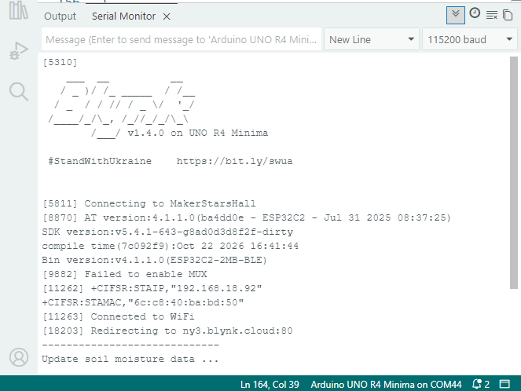
On the dashboard, drag the slider to a value above the current moisture (for example 40) and turn Auto Mode on. Within 35 seconds the pump starts, and the gauge begins to climb.
Note
The pump only ever runs when Auto Mode is on. With the switch off you can watch the readings for as long as you like and the pump stays quiet.
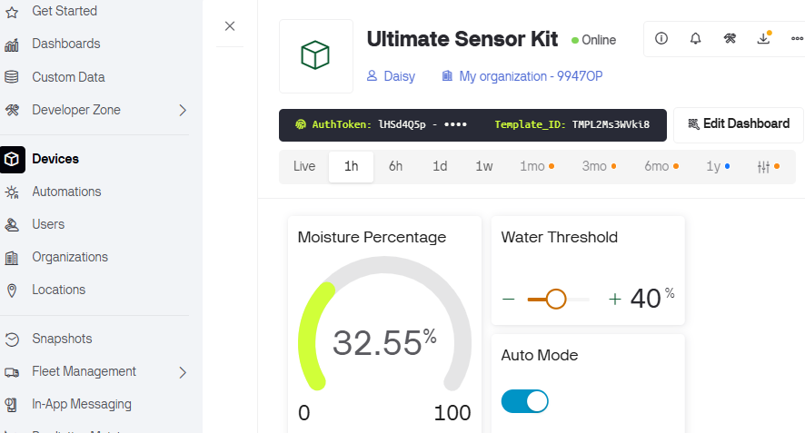


4. Code explanation
Blynk account and libraries
The first three lines say which Blynk device this board belongs to. They come from the device page and are identical in every project of this kit.
#define BLYNK_TEMPLATE_ID "TMPL2Ms3WVki8" #define BLYNK_TEMPLATE_NAME "Ultimate Sensor Kit" #define BLYNK_AUTH_TOKEN "lHSd4Q5pXP7YKUovVfPZYZqC0UHVORY6" #define BLYNK_PRINT Serial // show Blynk's own log on the Serial Monitor
The serial port that talks to the module
The ESPC2-01 works as a modem: the sketch sends it AT commands on D0/D1, which is
Serial1, a hardware port.espModuleInit()waits for the module to boot and then sendsATE0so the replies stop carrying a copy of the command.#define EspSerial Serial1 #define ESP8266_BAUD 115200 ESP8266 wifi(&EspSerial);
The pump
const int pump1A = 9; const int pump1B = 10; bool pumpStatus = 0;
The pump runs through an L9110 driver. Give
1Aa HIGH level and the pump turns;1Bstays LOW, it is only needed to reverse a motor. A relay or a simple transistor would work the same way - one pin, on or off.The probe and its two calibration points
const float moistureInAir = 535; const float moistureInWater = 280; const int sensorPin = A0;
The probe returns a raw number, and - this is the surprising part - the wetter the soil, the lower the number. The sketch turns that into a percentage:
moisturePercentage = 1 - (sensorValue - moistureInWater) / (moistureInAir - moistureInWater);
With the two calibration values this maps “in water” to
1.0and “in air” to0.0, and everything in between proportionally.Two timers, two different jobs
timer.setInterval(10000L, updateDataTimer); // report every 10 s timer.setInterval(35000L, autoWaterTimer); // check the pump every 35 s
Measuring is cheap, so it happens often. Starting a pump is not, so it is checked more slowly - and
delay()is never used, so the Blynk connection keeps running.BLYNK_CONNECTED() and the two writes
BLYNK_CONNECTED() { Blynk.syncVirtual(V9); Blynk.syncVirtual(V10); } BLYNK_WRITE(V9) { waterThreshold = param.asInt(); } BLYNK_WRITE(V10) { autoMode = param.asInt(); }
BLYNK_CONNECTED()runs at every connection, including after a power cut, and asks the server for the slider and the switch. Without it a restarted board would water with a threshold of0- that is, never.sendData() - report, autoWater() - act
void sendData() { sensorValue = analogRead(sensorPin); moisturePercentage = 1 - (sensorValue - moistureInWater) / (moistureInAir - moistureInWater); Blynk.virtualWrite(V8, moisturePercentage * 100); } void autoWater() { if (autoMode == 1 && moisturePercentage * 100 < waterThreshold) { // run the pump for a while } }
sendData()only reads and reports - it never touches the pump.autoWater()is the only place that starts it, and it needs both conditions: the automatic mode on, and the soil drier than your slider.